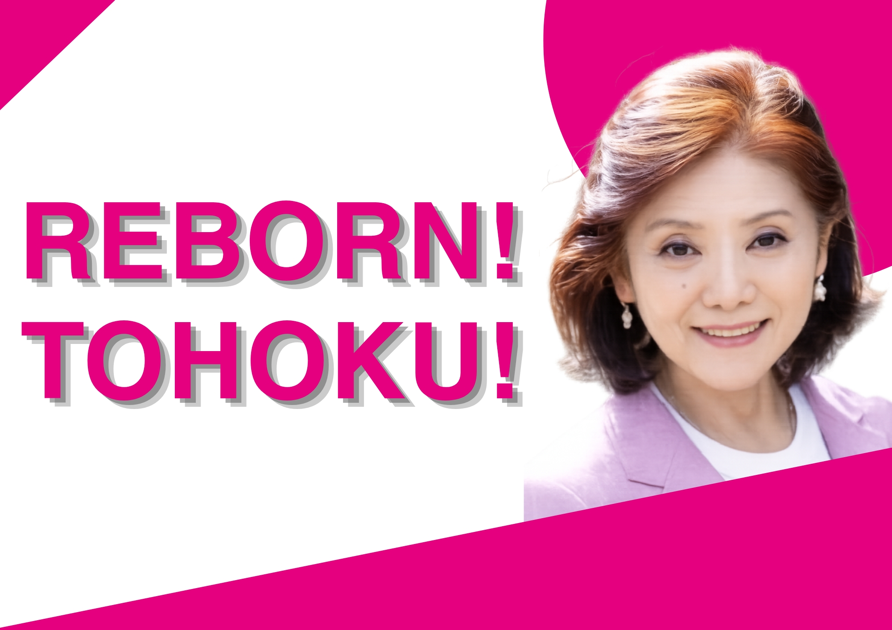

さわら わかこ
佐原若子
元衆議院議員
REBORN東北（いのちの党東北勝手連）代表
基本政策（準備中）
くらしといのちを守る
準備中
詳しく見る
- 30年にも及ぶ不況、さらに近年はコスト上昇による物価の高騰が続いています。積極財政によって消費税を廃止し、一律給付金で日本の経済を立て直します。
- 高額療養費の自己負担額の引き上げ、OTC類薬の負担増、高齢者の医療費不炭素などは許しません。誰もが安心して医療を受けられるようにし、いのちを守ります。医療・介護・保育などで働くエッセンシャルワーカーの給料は国のお金で引き上げます。
- 年金や生活保護などの公助を利用できる状態にあるにもかかわらず不支給となることのないよう審査方法などを見直します。生活保護の水際作戦を禁止します。年金・生活保護・最低時給の金額をアップし、高齢・障害・病気・失業・非正規など、どのような立場になったとしても心配いらない社会をつくります。
脱原発・再エネ推進
準備中
詳しく見る
- 青森県六ヶ所村では使用済み核燃料の再処理工場が建設中です。フランスのラ・アーグ再処理工場の現地に行ったとき、「あなたたちのせいで、ラ・アーグの子ども達は白血病になった」と言われたことがあります。日本の使用済み核燃料がフランスやイギリスで処理されています。このようなものを六ヶ所村で稼働させるわけにはいきません。原発は即時禁止、再処理もストップ。青森県を核のごみ捨て場にはさせません。
- 脱原発を主張するからといって、電気を使わないということではありません。小水力発電や、自然を破壊しない形での（メガではない）ソーラー発電、ペロブスカイト太陽電池など、国が再エネ事業に投資することで世界に先駆けた技術の開発を促進し、自然保護と経済発展の両立を目指します。
地方の再生
準備中
詳しく見る
- 地元青森県でも、老舗のお店がどんどんなくなっています。私たちにもっと使えるお金があれば、いろいろなものを買ったり飲食をするなどをして地域のお店を支援できるはずです。国の政策でお金を回すことにより地方を再生し、地域が活性化し、雇用が生まれれば、都会に出ていた若い世代も戻ってくるはずです。地域を再生し、子育て支援や教育を充実させ、地域で子どもを安心して産み育てられる環境を作ります。これによって人口減少をストップさせます。
- アメリカ産ジャガイモの輸入解禁をめぐる動きが進んでいるといわれています。むやみな輸入解禁には反対し、国内で自給できるものは自給し、食の安全と農家を守ります。また、コメの不足による価格高騰や、逆にコメが余るなど、不安定な状況を改善します。大量に収穫できたときには国が買い取り備蓄し、たとえ不作でも国が一次産業の所得を補償し、地方の農家の暮らしを支える政策を進めます。
平和外交・対米自立
準備中
詳しく見る
- 青森県の米軍三沢基地に配備されている戦闘機がアメリカの対イラン作戦に関与したと報じられています。アメリカの言いなりではなく独立し、日米地位協定を見直し、日本にある基地を戦争に使わせないようにします。
- 不戦を誓った憲法9条を絶対に守り抜きます。これは自衛権を否定する意味ではありません。現行憲法でも専守防衛の範囲での自衛権は認められているという認識です。自衛隊は災害救助などで活躍してくれる非常にありがたい存在です。武器ではなく防災に国の予算を投資し、災害対応と自衛権の待遇を改善します。
世界がぜんたい幸福にならないうちは
個人の幸福はあり得ない
宮沢賢治の言葉より
プロフィール
佐原若子（さわら わかこ）
- 元衆議院議員
- 歯科医師
- 核燃阻止一万人訴訟原告団
- 2019年青森県知事選挙に出馬
- 2024年衆議院議員選挙にて、れいわ新選組東北ブロック比例候補として出馬、当選
- 2026年衆議院議員選挙にて、れいわ新選組青森3区公認候補者として出馬
現在は、れいわ新選組から「いのちの党」へ党名変更に伴い、いのちの党東北勝手連として「REBORN東北」の名称でボランティアとして活動中
お知らせ
- お知らせ2026年12月18日 核燃阻止一万人訴訟原告団 意見陳述予定
活動報告
- 活動2026年10月19日 いのちの党 奥田ふみよ議員 予算委員会質疑後の 国会前アフターコールデモに参加しました
SNS
問い合わせ
- 事務所
- 準備中
- 電話
- 準備中
- メール
- 準備中